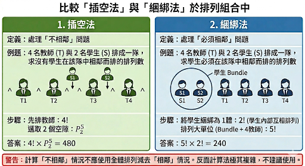
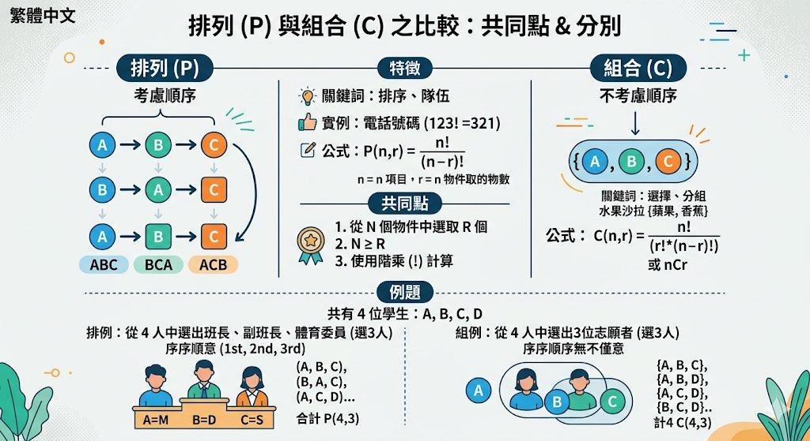

🍖
🍗
🥩
🍳
🥬
從「HAT」抽1個字母，從「BIRD」抽1個字母，求抽中包含母音(A, E, I, O, U)既概率。
| B | I | R | D | |
|---|---|---|---|---|
| H | HB | HI | HR | HD |
| A | AB | AI | AR | AD |
| T | TB | TI | TR | TD |
樣本空間： 3 × 4 = 12 種
包含母音既組合（紅色）： HI, AB, AI, AR, AD, TI → 6種
P(抽中母音) = 6/12 = 1/2

加法法則： 完成工作有 k 種互斥方法，總數 = \(n_1 + n_2 + ... + n_k\)
乘法法則： 工作由 k 個連續步驟組成，總數 = \(n_1 \times n_2 \times ... \times n_k\)
(i) 未完成4個位：\(10 \times 10 \times 10 \times 10 = 10,000\) 種（乘法）
(ii) 已設3組密碼揀1組：\(n_1 + n_2 + n_3\) 種（加法）
(i) 揀1本：\(6+4+7 = 17\)
(ii) 每類各1本：\(6 \times 4 \times 7 = 168\)
規則： 3位密碼 = 1個字母(52個) + 2個數字(0-9)
限制：O/o唔可以夾0，I/l唔可以夾1

排列 (Permutation)： 選取物件時，次序影響結果。
例：ABC ≠ BAC
公式： \(P^n_r = \frac{n!}{(n-r)!}\)
\(P^4_4 = 4! = 24\) 種

組合 (Combination)： 選取物件時，次序不影響結果。
例：{A,B,C} = {B,A,C}
公式： \(C^n_r = \frac{n!}{r!(n-r)!} = P^n_r \div r!\)
\(C^4_3 = 4\) 種